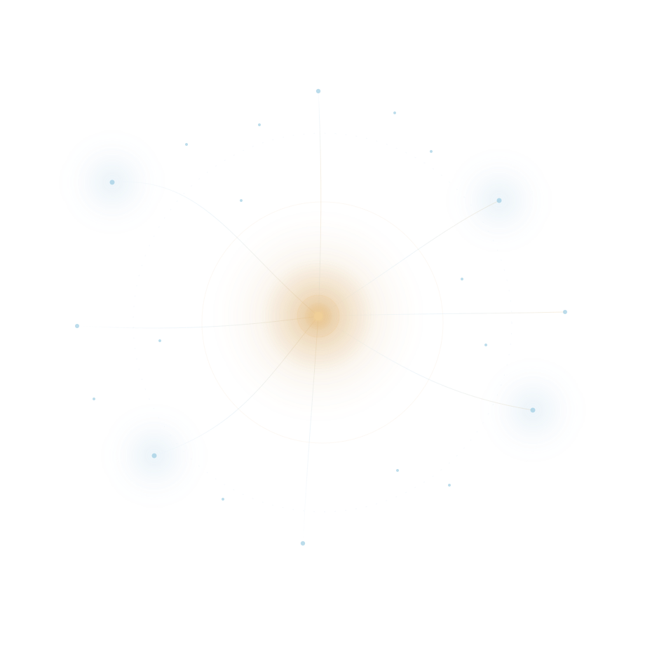

Multi-perspective reasoning
Designed to bring complementary reasoning perspectives into difficult analytical work instead of relying on one undifferentiated response path.
Strategic technology opportunity
EGMERS is a proprietary software platform designed to make complex AI-assisted reasoning more structured, evidence-aware and reviewable. It is presented here for strategic acquisition consideration.
This public presentation intentionally excludes confidential implementation details. Deeper technical substantiation may be reviewed under appropriate due-diligence conditions.

The opportunity
Many AI products can generate fluent answers. Fewer are designed around the harder commercial question: how should complex work be examined when evidence, competing interpretations and decision quality matter?
EGMERS addresses that gap at the system level. The asset is designed around coordinated reasoning rather than a single-pass response, creating a foundation for products and workflows that require more structure than ordinary conversational generation.
What exists today
The current software provides a structured environment for coordinating multiple reasoning perspectives, handling supporting evidence, surfacing disagreement and evaluating system behavior. The public description is intentionally high level.
Designed to bring complementary reasoning perspectives into difficult analytical work instead of relying on one undifferentiated response path.
Supports a clearer relationship between conclusions, supporting information and unresolved uncertainty.
Designed to expose disagreement and challenge weak conclusions rather than silently compressing every perspective into apparent certainty.
Includes structured internal verification and repeatability practices intended to separate software capability from unsupported performance claims.
Why it may matter to an acquirer
A buyer can own proprietary system-level reasoning capability rather than compete only on access to broadly available model APIs.
The asset provides an existing software and research foundation that may shorten the path toward more sophisticated reasoning products or internal capabilities.
EGMERS may be integrated as internal infrastructure, incorporated into an existing AI offering, or extended through a dedicated R&D program.
The project separates implemented software, supporting evidence and future ambition rather than presenting prospective capability as already proven.
Differentiation
EGMERS combines a multi-expert reasoning proposition with evidence discipline, challenge mechanisms and controlled evaluation at a level intended to support deeper analytical applications.
The exact technical composition that creates that behavior is proprietary and is not disclosed on this public website.
Evidence posture
The software has been implemented and exercised through structured internal verification and repeatability controls. That supports the maturity statement “developed software.”
This public presentation does not claim that EGMERS has established general superiority over leading AI systems or qualified human experts. Those remain prospective research questions rather than current public claims.
Implemented software exists and supports the public capability categories described on this page.
Internal software validation and repeatability practices support the stated maturity, without implying broad external superiority.
Future development may test stronger performance claims across models, domains and professional task settings.
Strategic fit
For organizations seeking differentiated reasoning capability around existing model access and agent infrastructure.
For products where complex knowledge work, analysis or decision support requires more structure and reviewability.
For teams that may benefit from an existing proprietary foundation for continued investigation into coordinated AI reasoning.
For buyers that view proprietary system-level AI capability as an asset rather than a commodity feature.
Development potential
Future development could extend EGMERS toward broader domain specialization, tighter integration with enterprise knowledge workflows, stronger comparative evaluation and additional forms of model-portfolio reasoning.
These are development options, not representations of functionality already delivered. Their relevance depends on the acquirer’s product strategy, data environment and target market.
Acquisition & due diligence
This website is the first layer of the acquisition conversation. It explains why the asset may warrant investigation without turning the public presentation into a technical blueprint.
Confidential technical substantiation may be reviewed under appropriate due-diligence conditions. It is intentionally not hosted in this public repository.
Valuation, transaction structure, transfer scope, warranties and commercial terms are not represented as settled on this public page.